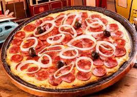

calabresa
Para a Massa:
- 200 ml de água
- 450 g de farinha de trigo integral
- 1 xícara (chá) NESTLÉ® Aveia Flocos Finos
- 1 colher de (chá) fermento biológico seco
- 1 pitada de sal
- 2 xícaras (chá) de molho de tomate
- Recheio:
- 1 colher (sopa) de azeite
- meia cebola pequena picada
- 150g de frango cozido e desfiado
- meia xícara (chá) de palmito picado
- meia xícara (chá) de milho-verde
- 1 colher (sopa) de cebolinha picada
- 1 xícara (chá) queijo minas ralado
- 3 colheres (sopa) de NUTREN® Senior Sem Sabor em Pó
 |